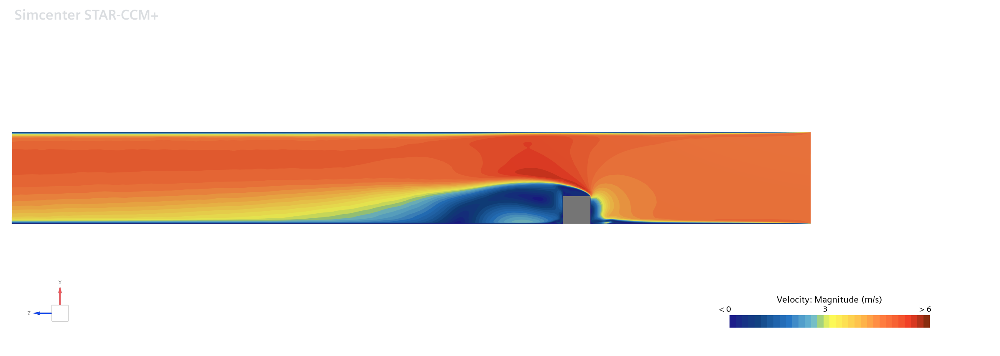
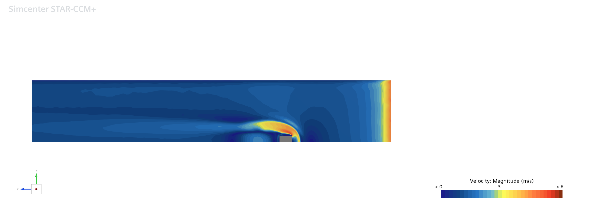
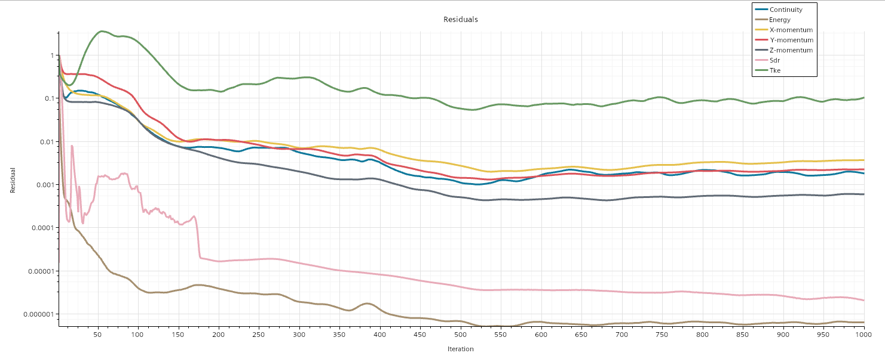

The group simulation
The team modelled a 15 mm copper cube (with an epoxy layer) mounted in a 150 × 50 mm channel, solving conjugate heat transfer between the heated solid and the air. Key choices:
- Mesh: a polyhedral mesh scaled to the cube size, with prism layers and three volumetric refinements around the cube and wake — giving wall y+ < 1 for proper resolution of the viscous sublayer (essential for heat-transfer accuracy with SST k-ω).
- Physics: steady, 3-D segregated flow; air as an ideal gas; a symmetry plane to halve the domain; a constant-temperature (348 K) interface inside the cube.
- Conditions: Reynolds numbers from 2,750 to 4,970, matching the reference experiment.


The simulation reproduced the expected flow physics — a windward stagnation zone, leading-edge separation, a horseshoe vortex, and downstream recirculation and reattachment — matching the experimental streamline patterns of Meinders et al. to within the ~10–15% expected from the channel-vs-boundary-layer difference.
My contribution — turbulence-model comparison
Steady RANS turbulence models are cheap but rely on modelling assumptions that are stretched by separated, recirculating flow. I kept the domain and mesh identical to the group case and varied only the turbulence model, so any differences were down to the model itself. I compared three:
- Realizable k-ε — two-equation eddy-viscosity model (assumes isotropic turbulence).
- SST k-ω — Menter's blended model, better near walls and in adverse pressure gradients.
- Reynolds Stress Model (RSM) — solves the Reynolds stresses directly, capturing anisotropy. I ran it with a staged approach — SST for 1,000 iterations to build a stable field, then switched to RSM to 2,000 — for numerical stability.
I validated each against experimental data along the path A–B–C–D over the cube surface (normalised heat transfer coefficient) and through the wake (velocity profile at y/H = 0.5).
Results
| Region (normalised HTC) | Experiment | RSM | SST k-ω | Realizable k-ε |
|---|---|---|---|---|
| Top face B–C (separated) | 0.849 | 0.640 | 0.584 | 0.434 |
| Windward face C–D (stagnation) | 1.159 | 1.614 | 1.566 | 1.553 |
- On the separated top face, all models under-predicted heat transfer, but RSM came closest (0.640 vs 0.849) — its ability to capture Reynolds-stress anisotropy matters most where flow separates. Realizable k-ε was worst (0.434), as its isotropic assumption is poorly suited to 3-D separated flow.
- On the windward stagnation face, all models over-predicted by 34–39%, caused by excessive turbulence production where the flow impinges on the cube.
- All three captured the wake velocity deficit and reversed-flow recirculation, with RSM and SST agreeing most closely.
Conclusion: RANS model selection significantly affects heat-transfer prediction around a bluff body, and the Reynolds Stress Model is the most reliable choice for separated flow — at the cost of slower convergence.

Skills demonstrated
- Full CFD workflow in Siemens Star-CCM+ — domain, polyhedral meshing with prism layers, conjugate heat transfer.
- Understanding why near-wall resolution (y+ < 1) and turbulence-model choice decide heat-transfer accuracy.
- A controlled comparative study, isolating one variable and validating against experiment.
- Working in a five-person team, each owning a distinct investigation around a shared base simulation.